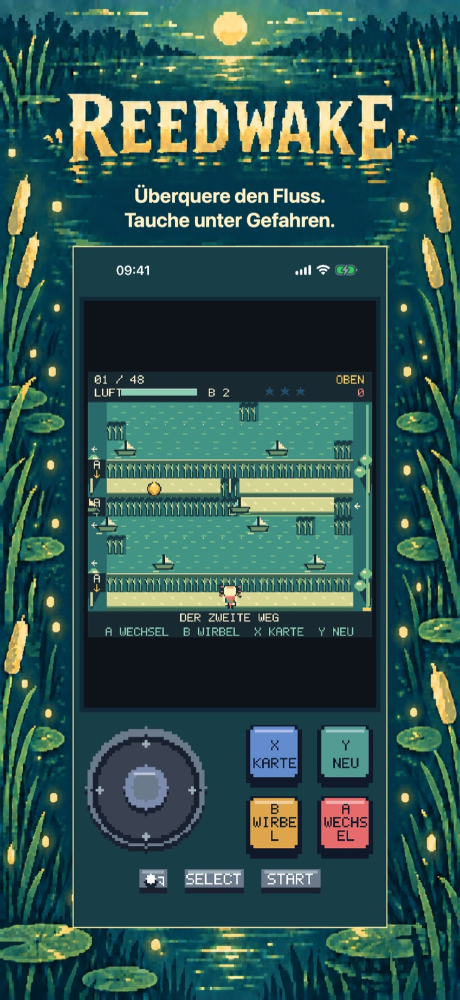
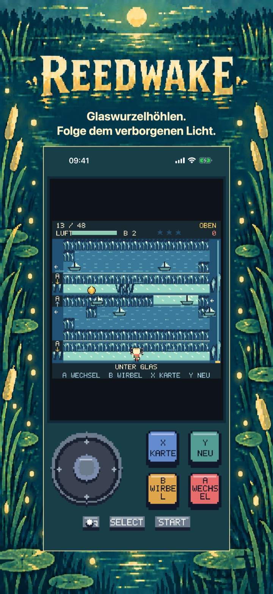
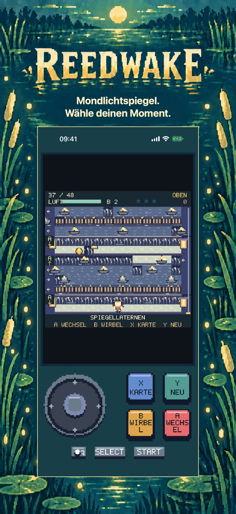
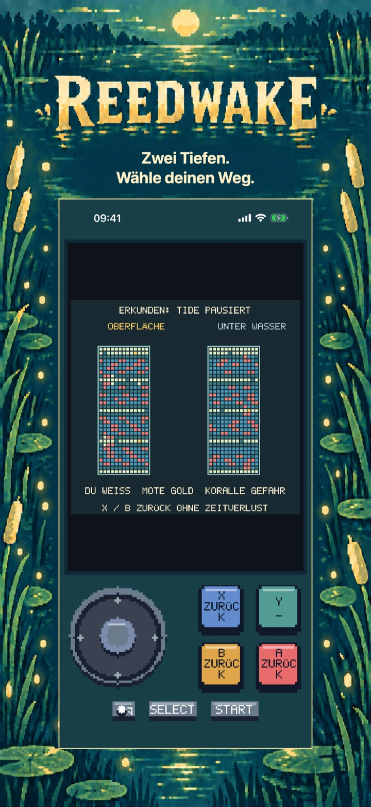
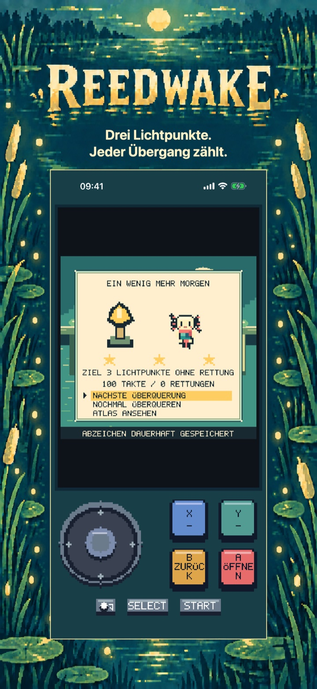
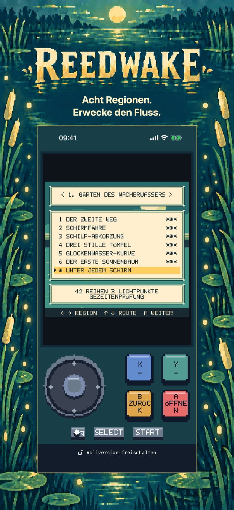

Reedwake
Reedwake: Flussabenteuer
Zwei Tiefen, ein Fluss zum Erwecken. Überquere Strömungen, tauche unter Gefahren hindurch und belebe acht Sonnenbäume. Die ersten sechs Übergänge sind gratis.
Demnächst im App Store
Die ersten sechs Storyüberquerungen in den Gärten des Wacherwassers sind kostenlos spielbar.

Die Reise
Überquere den Fluss auf zwei Tiefenebenen
X erkundet beide Ebenen ohne Zeitverlust. START pausiert. In den Einstellungen gibt es sanftes Tempo und ruhige Bewegung. Der Atlas bietet 48 Storyrouten und acht optionale Gezeitenprüfungen.
Regionen
Gezeitenprüfungen
Tiefenebenen
Beginne mit einer vollständigen Startregion
Gärten des Wacherwassers: die ersten sechs Storyüberquerungen.
Die ersten sechs Storyüberquerungen in den Gärten des Wacherwassers sind kostenlos spielbar.
Setze Nims Reise fort
Schalte sieben weitere Regionen, 42 Storyüberquerungen, alle acht Gezeitenprüfungen und die ganze Geschichte mit Ende frei.
Einmalkauf · Keine Werbung · Kein Abo
Basispreis in Spanien: 3,99 €; Apple legt die Preise anderer Stores fest.
Reedwake
Tauchen, ausweichen, erwecken
Erwecke den Fluss, Übergang für Übergang.
Begleite Nim auf einem Flussabenteuer in Pixelgrafik mit zwei Ebenen. Hüpfe an beweglichen Hindernissen auf der Oberfläche vorbei, tauche unter dem Trubel hindurch und finde sichere Stellen zum Luftholen. Wurzeldächer und flache Bänke verhindern, dass eine Ebene zum einfachen Umweg wird: Beobachte den Fluss, wähle deinen Moment und wechsle die Tiefe.
EINE KLEINE GLOCKE MIT GROSSER WIRKUNG Die Wirbelglocke hält Gefahren für einige kostbare Takte an. Erkunde beide Ebenen bei angehaltener Zeit und plane deinen nächsten Zug. Das sanfte Tempo verlangsamt das Geschehen ohne geringere Belohnungen und führt eigene Rekorde.
ACHT REGIONEN ZUM ERLEUCHTEN Das vollständige Spiel bietet 48 Story-Übergänge in acht Regionen sowie acht optionale Gezeitenprüfungen. Sammle drei Lichtpunkte pro Strecke, verdiene bis zu 168 Abzeichen, begegne den Flusshütern und belebe die acht Sonnenbäume. Rettungen an Kontrollpunkten helfen beim nächsten Versuch; lokale Spielstände bewahren deine Reise.
EIN VOLLSTÄNDIGER KOSTENLOSER AUFTAKT Spiele alle sechs Übergänge der Gärten des Wacherwassers kostenlos. Ein einmaliger, dauerhafter Vollspiel-Kauf schaltet die sieben weiteren Regionen, die übrigen 42 Story-Übergänge, alle acht Gezeitenprüfungen sowie die vollständige Geschichte und ihr Ende frei. Keine Werbung, Abos, Verbrauchsartikel oder bezahlten Wiederholungen. Einstellungen, Kartenansicht und sanftes Tempo bleiben im kostenlosen Auftakt verfügbar. Käufe lassen sich wiederherstellen; Familienfreigabe wird unterstützt.
SPIELE AUF DEINE ART Wechsle zwischen Analogstick und Steuerkreuz auf dem Bildschirm. Nutze die vier Aktionstasten, einen kompatiblen Controller oder eine Hardwaretastatur. Spiele auf Deutsch, Englisch, Spanisch, Französisch oder Italienisch. Kein Konto nötig: Fortschritt und Einstellungen bleiben auf deinem Gerät.
Im Spiel
Im Spiel
Die sechs Ansichten zeigen die Flussreise der Reihe nach: Kernmechanik, zwei neue Regionen, ein tieferes Rätsel, eine gelöste Passage und anschließend der Atlas.
Tauche unter Gefahren.

Folge dem verborgenen Licht.

Wähle deinen Moment.

Wähle deinen Weg.

Jeder Übergang zählt.

Erwecke den Fluss.
Hilfe & Support
Fragen zu Reedwake?
Hier findest du praktische Antworten zu Steuerung, Spielstand, kostenlosem Einstieg und dem Kauf der Vollversion.
Wie bewege ich Nim?
Der Spieleführer erklärt Bewegung, Tiefenwechsel und Gefahren beim Überqueren. Bewege dich mit der Steuerung jeweils ein Feld; die A-Aktion wechselt die Ebene, wenn der Weg es erlaubt.
Das Steuerkreuz bewegt Nim pro Takt ein Feld. Halte eine Richtung, um weiterzuhüpfen. Erreiche den Sonnenbaum am anderen Ufer. Kein Countdown, kein Lebenslimit.
A taucht ab oder auf. Wurzeldächer sperren oben, flache Bänke unten. Finde Lücken und wechsle VOR dem Überqueren die Ebene. A-Pfeile an den Wegen zeigen die offene Ebene.
Wo wird mein Fortschritt gespeichert?
Fortschritt, Abzeichen und Einstellungen werden lokal auf diesem Gerät gespeichert. Reedwake benötigt kein Konto. Beim Löschen der App werden lokale Daten entfernt, vorbehaltlich normaler Betriebssystem-Backups.
Was kann ich kostenlos spielen?
Gärten des Wacherwassers: die ersten sechs Storyüberquerungen.
Was schaltet der Vollversionskauf frei?
Schalte sieben weitere Regionen, 42 Storyüberquerungen, alle acht Gezeitenprüfungen und die ganze Geschichte mit Ende frei.
Einmalkauf · Keine Werbung · Kein Abo Basispreis in Spanien: 3,99 €; Apple legt die Preise anderer Stores fest.
Wie stelle ich einen Kauf wieder her?
Öffne den Kaufdialog für die Vollversion und wähle Käufe wiederherstellen.
Mein Kauf ist ausstehend oder der Store nicht verfügbar. Was kann ich tun?
Ein ausstehender Kauf wartet noch auf eine Genehmigung oder seinen Abschluss. Spiele bis dahin das kostenlose Kapitel weiter und prüfe es später erneut. Wenn der Store nicht lädt, überprüfe deine Verbindung und versuche es erneut. Ein verifizierter Kauf oder eine Wiederherstellung schaltet das ganze Spiel frei und erhält deinen Fortschritt.